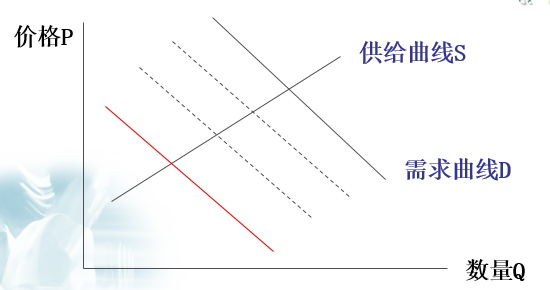
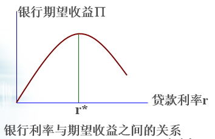

6.1逆向选择问题
阿克尔洛夫的发现
在旧车市场上，好车车主只愿意以较高价卖出车辆，次车车主却愿意以较低价出手。买主知道有一定的概率会买到次车但却难以识别次车，因此愿意出的价格就要打折扣。如果市场上的次车比例大到一定程度，好车车主就不再愿意把车投入市场，导致市场上次车横行。
6.1.1柠檬市场模型
模型概括
旧车市场中，有多个潜在卖者S和多个潜在买者b。卖者知道车的质量r。买者虽然不知道车的质量，但知道质量分布函数F(r)；假定买卖双方都是风险中性、偏好相同，并且如果没有交易发生时双方的效用为零；
现在买方出价P，如果卖方接受并成交，则
买方的效用为：∏b=V(r)(买方对车的评价）-P
卖方的效用为：∏s=P-U(r)（卖方对车的评价）
假定V(r)＞U(r)，这样交易才有可能成立；如果V(r)＜U(r)，意味着卖方不接受买方的出价，则双方效用为零。
1.只有两类卖主的情况
市场上只有两种类型的车：高质量的车r=6000，低质量的车r=2000。买者不知道车的质量，因此不能按车的质量付款成交，但她知道车的质量分布，有6000和2000两种，平均质量为4000，因此会给出平均价格P=4000。这时高质量的车退出市场，只有低质量的车成交。
2.卖方的类型连续分布的情况
需求曲线不断左移，最后只有质量最低的车成交；由于r是连续分布的，r=2000的概率为0，因此整个市场不存在。

3.其他条件下的分析结论
1.当买者对车的评价高于卖者时，尽管高质量的车仍然不会进入市场，但交易会发生，市场部分地存在，但交易数量不是最有效的，买者的评价越高，成交数量越大。
2.当卖者对车的评价不同时，均衡交易量取决于买者评价参数与卖者评价参数的共同作用，但均衡交易量仍然小于对称信息下的有效交易量。
3.在非对称信息条件下，市场在多大程度上存在，依赖于产品质量的分布函数和买卖双方评价的差异程度。
4.如果假定买卖双方不是风险中性而是风险规避的，均衡价格和均衡质量都比风险中性情况下低。
6.1.2其他逆向选择模型
1.保险市场
健康状况好的人觉得保险费过高，退出保险市场，留下的恰恰都是健康状况非常差的，保险公司选择的总是那些最能使自己破产的人。
2.银行贷款业务
银行期望收益取决于贷款利率和还款概率。如果贷款风险独立于利率水平，在资金的需求大于供给时，通过提高利率，银行可以增加自己的收益；当银行不能观察贷款人的投资风险时，提高利率将使低风险贷款人退出市场，出现逆向选择问题；或者诱使借款人选择更高风险的项目，出现道德风险行为；从而使银行贷款的平均风险上升。

在所有贷款申请人中，一部分人得到贷款，另一部分被拒绝，即使这部分人愿意支付更高的利息。一个给定申请人的贷款要求只能部分的被满足。
3.劳动市场
雇主不知道谁的能力强,只能按照相同的工资招聘所有的雇员。如果雇主降低工资，能力强的人就会离开。随着工资降低，雇员人数在减少，能力结构发生变化，低效率的雇员所占比重越来越高。
4.二级密封价格拍卖法
拍卖流程
每个买主写出价格，密封后交给卖主。卖主拆开信封后宣布将古董卖给出价最高的人，但只需支付开出的第二高的价格。对每个买主来说，他不知道其他买主的评价，但支付的第二高的价格是固定的，不会随他开出的价格而变；他开出的价格愈高，获胜的可能就愈大。但他不能开出比他的价值评价更高的价格，因为若存一个比他的价值评价高的第二高价格，他就必须以高出他的价值评价的价格支付。